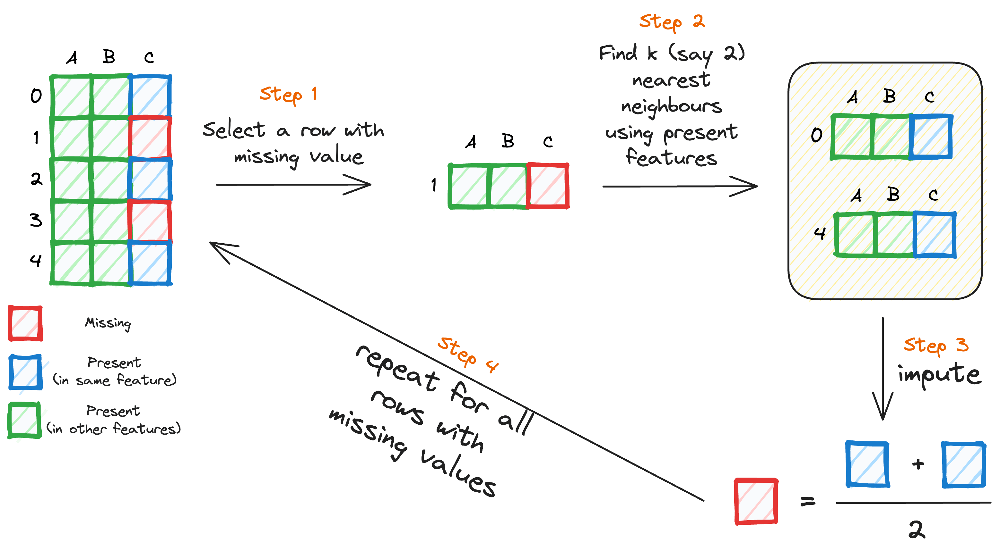
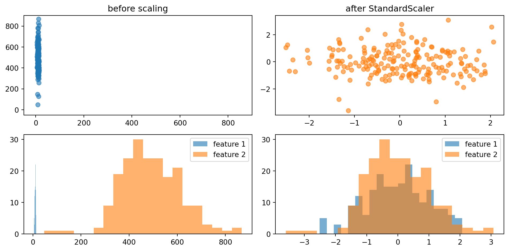
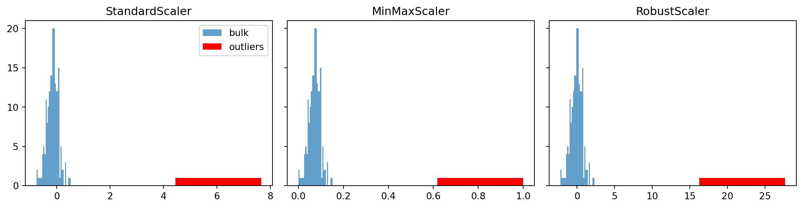
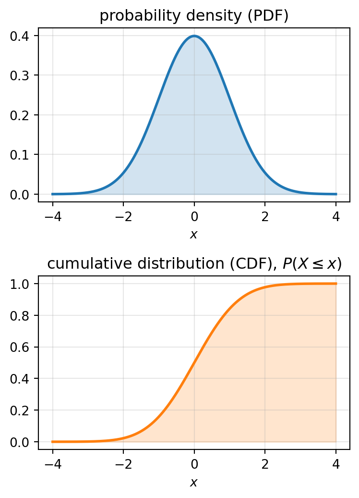
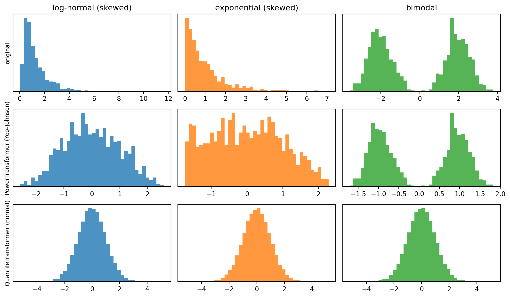
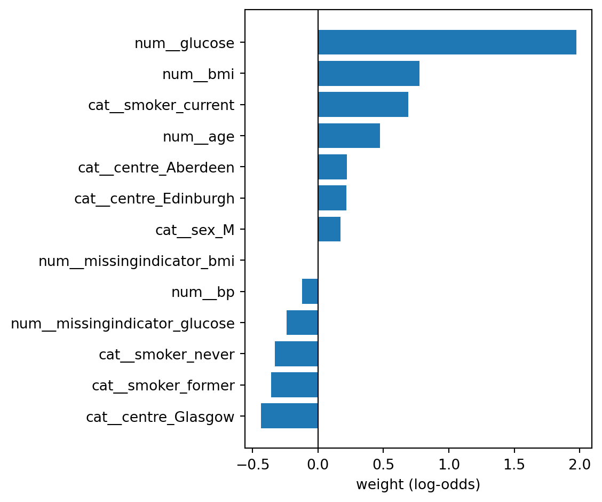
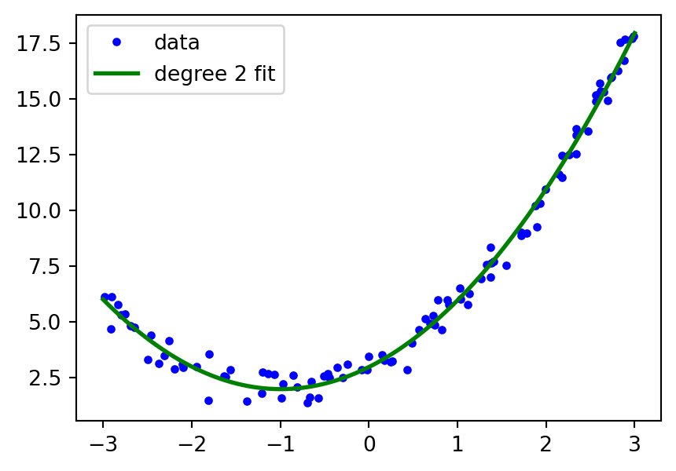
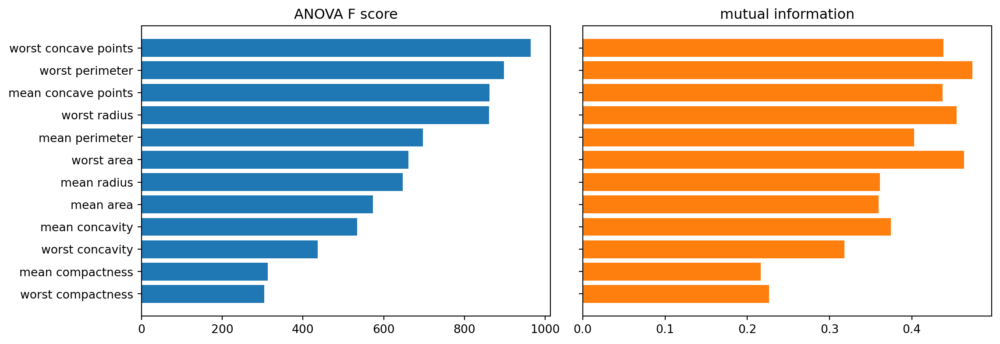
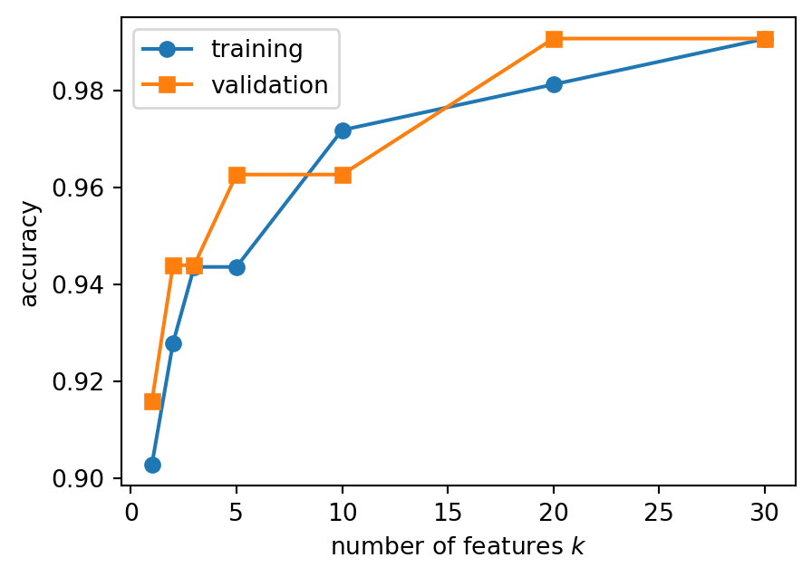

import numpy as np
from sklearn.preprocessing import StandardScaler
X_demo = np.array([[1.0, 100.0], [2.0, 300.0], [3.0, 500.0]])
scaler = StandardScaler().fit(X_demo)
print("learned mean :", scaler.mean_) # learned parameters end with _
print("learned std :", scaler.scale_)
print(scaler.transform([[2.0, 700.0]])) # a new sample, same parametersPre-processing and pipelines
Introduction to Artificial Intelligence and Machine Learning 4
Jiabao Xu
Jiabao.Xu@glasgow.ac.uk
Massimo Vassalli
massimo.vassalli@glasgow.ac.uk
From a clean dataset to a real one
So far our datasets arrived ready to use: diabetes (2b) is already scaled, breast cancer (3a) has no missing values and only numerical features. In Lecture 2a we cleaned a small raw table by hand: we dropped identifiers, constant, redundant and leaking columns, removed a duplicate, engineered BMI, and left a missing value for later.
Today we build the tools to do this systematically and safely in scikit-learn:
- transformers and pipelines, and the rule that makes them safe: fit on training data only
- missing values: why they occur and how to impute them
- categorical features and their encoding
- scaling and non-linear transformations
- feature engineering (polynomial and custom features) and feature selection (filter methods)
Important
This lecture is based on chapters 3 and 4 of Machine Learning for Engineers, on Machine Learning with Python for feature selection, and on the scikit-learn user guide on dataset transformations.
Multivariate problems
With \(d\) features, both linear and logistic regression use the score \(b + \mathbf{w}^T\mathbf{x}_i\), with one weight per feature (notation in 2a). More features let the model capture richer relationships, but they bring new problems:
- Scale. Features in different units and ranges slow down gradient descent, change the effect of the setting
CofLogisticRegression(3a), and make the weights impossible to compare. \(\rightarrow\) scaling, today. - Heterogeneous types. Real tables mix numbers, categories and missing entries. \(\rightarrow\) imputation and encoding, today.
- Irrelevant and redundant features. Not every feature helps, and correlated features share their weights (3a). \(\rightarrow\) feature selection: filter methods today, wrapper methods in 4b, embedded methods in 5a.
- Overfitting. More parameters mean more flexibility, and the model can fit noise instead of structure. \(\rightarrow\) seen in the validation and learning curves of 4b, explained and controlled in 5a.
Transformers and pipelines
Data pre-processing includes all the steps that turn raw data into a meaningful dataset: cleaning, imputing, encoding, scaling, transforming, selecting. In scikit-learn each step is a transformer (2a):
fit(X)learns the parameters of the transformation from data (e.g. the mean and standard deviation of each feature)transform(X)applies it, to the same or to new datafit_transform(X)does both in one step
learned mean : [ 2. 300.]
learned std : [ 0.81649658 163.29931619]
[[0. 2.44948974]]Fit on training data only
A transformer learns from the data it is fitted on, exactly like a model. If it is fitted on the whole dataset before splitting, the statistics of the test set (its mean, its missing values, its most informative features) leak into the training process, and the test score becomes optimistic.
Important
Split first. Fit every transformer on the training set only, then use it to transform the test set (and any new data). The test set is only ever used for the final evaluation.
For scaling, the effect of this mistake is usually small. For imputation and, above all, for feature selection, it can be dramatic: at the end of the lecture we will see a model that seems to predict random labels. The simplest way to never make this mistake is a pipeline.
Pipelines
A Pipeline chains transformers and a final estimator into a single object with the usual fit / predict / score interface:
- convenience: one
fitand onepredictfor the whole chain - safety:
fitfits every step on the training data only;predictonly transforms - joint tuning: the parameters of all the steps can be tuned together (4b)
All steps except the last must be transformers; the last can be any estimator.
Pipelines in code
from sklearn.pipeline import make_pipeline, Pipeline
from sklearn.linear_model import LogisticRegression
pipe = make_pipeline(StandardScaler(), LogisticRegression()) # names given automatically
print(pipe.steps)
pipe2 = Pipeline([("scale", StandardScaler()), # names chosen by us
("clf", LogisticRegression())])
print(pipe2.named_steps["clf"])[('standardscaler', StandardScaler()), ('logisticregression', LogisticRegression())]
LogisticRegression()Note
A fitted step is reached by name (pipe.named_steps["clf"]) or by position (pipe[-1]), as we did in 3a to read the coefficients with model[-1].coef_.
A realistic table
To see pre-processing at work we need a realistic table. We generate one (so that we know the truth): 500 patients from three centres, with numerical and categorical features, missing values, and a binary target.
age bmi glucose bp sex smoker centre diabetic
0 29 26.6 6.9 113.0 M never Glasgow 1
1 67 19.1 4.7 153.0 F former Aberdeen 0
2 61 20.4 4.0 120.0 M current Aberdeen 0
3 49 36.6 5.7 144.0 M never Edinburgh 1
4 48 21.2 6.6 129.0 M former Glasgow 0Note
The data are generated so that diabetes depends on age, BMI, glucose and smoking, but not on blood pressure, sex or centre. We will use this to check what the model learns.
Missing data
Many real datasets contain missing values, encoded as blanks, NaN or placeholders such as -1 or 999. Most scikit-learn estimators, including linear and logistic regression, refuse NaN. Before choosing what to do, ask why the values are missing:
- Missing completely at random: unrelated to anything (a lost form). Imputation introduces little bias.
- Missing at random: related to other observed features (older patients skip a questionnaire). Imputation from the other features works.
- Missing not at random: related to the missing value itself (glucose not measured because the patient looked healthy). The fact that a value is missing is information.
Checking missing values
How much is missing, and does it matter?
age bmi glucose bp sex smoker centre diabetic
fraction missing 0.0 0.05 0.17 0.0 0.0 0.04 0.0 0.0Glucose is missing for about one patient in six. Is the missingness related to the target?
fraction diabetic, glucose measured: 0.55
fraction diabetic, glucose missing : 0.39Patients without a glucose test are less often diabetic: the test was ordered less often for healthy-looking patients (missing not at random). Here, missingness is information about the target.
Tip
Always check the fraction of missing values per feature and whether missingness is related to the target. Both belong in the data investigation of a coursework report.
Dropping or imputing
The simplest strategy is to discard the rows (or columns) with missing values. It is acceptable when very few rows are affected, but it throws away the rest of the information in those rows, and it can bias the dataset: here, dropping rows without glucose would remove mostly healthy patients.
The alternative is to impute the missing values, i.e. to infer them from the known part of the data.

SimpleImputer
SimpleImputer replaces the missing values of each column with a statistic learned on the training data: "mean", "median" (robust to skewed data), "most_frequent" (also for categories) or a "constant". With add_indicator=True it also adds a binary column that records where the values were missing, so that the model can use missingness as information.
[[ 1. 7. 0. 0.]
[ 3. 5. 1. 0.]
[ 3. 5. 0. 1.]
[10. 4. 0. 0.]]
medians learned: [3. 5.]Note
More refined imputers predict each missing value from the other features: KNNImputer (average of the most similar samples) and IterativeImputer (a regression model per feature). They are imputers like any other: fitted on training data, used inside a pipeline.
Categorical features
Features are often categorical: sex, smoking status, centre, month. Models need numbers, so categories must be encoded. The right encoding depends on the level of measurement (2a):
- Ordinal categories have a natural order (never < former < current smoker; small < medium < large).
OrdinalEncodermaps them to integers \(0, 1, \dots\) — but the order must be given explicitly (categories=[["never", "former", "current"]]), and the model will assume equal steps between levels. - Nominal categories have no order (centre, country). Integer codes would invent one: Aberdeen = 0, Edinburgh = 1, Glasgow = 2 would make Edinburgh “between” the other two.
OneHotEncodercreates one binary column per category instead (one-hot or dummy encoding).
One-hot encoding
from sklearn.preprocessing import OneHotEncoder
enc = OneHotEncoder(handle_unknown="ignore")
X_cat = [["male", "from US", "uses Safari"],
["female", "from Europe", "uses Firefox"],
["female", "from Europe", "uses Chrome"]]
enc.fit(X_cat)
print(enc.get_feature_names_out())
print(enc.transform([["female", "from US", "uses Safari"],
["male", "from Asia", "uses Chrome"]]).toarray())['x0_female' 'x0_male' 'x1_from Europe' 'x1_from US' 'x2_uses Chrome'
'x2_uses Firefox' 'x2_uses Safari']
[[1. 0. 0. 1. 0. 0. 1.]
[0. 1. 0. 0. 1. 0. 0.]]Each category becomes a 0/1 column. A category never seen in training (“from Asia”) is encoded as all zeros thanks to handle_unknown="ignore", instead of raising an error at prediction time. For a binary feature one column is enough: drop="if_binary".
Warning
One-hot encoding multiplies the number of features: a feature with 100 categories becomes 100 columns. Rare categories can be grouped (min_frequency, max_categories) before encoding.
Scaling
In linear regression we minimise the MSE:
\[ L(\mathbf{w}, b) = \frac{1}{n} \sum_{i=1}^{n} \big( y_i - (b + \mathbf{w}^{T} \mathbf{x}_i) \big)^2 \]
Each feature \(x_j\) contributes to the prediction through its weight \(w_j\). If one feature takes values around 1–10 and another around 1–1000, the gradient with respect to the second weight is about 100 times larger simply because of the scale of the feature, not because it is more important. Gradient descent then takes uneven steps along each direction, the loss surface becomes an elongated valley, and convergence is slow or unstable (2b, and the unscaled breast cancer fit of 3a).
Which models need scaling?
| Model | Scaling needed? | Why |
|---|---|---|
| Linear and logistic regression, gradient descent (2b, 3a) | yes, for convergence | uneven gradients, slow or failed convergence |
Models that limit the size of the weights (C of LogisticRegression, 3a; regularisation, 5a) |
yes, for the result | the size of \(w_j\) depends on the units of \(x_j\): the limit would act unevenly on the features |
| Comparing or plotting weights (3a) | yes, for interpretation | a weight per unit of \(x_j\) depends on the units |
| Methods based on distances: kNN, clustering, SVM (6b, 7b) | yes, for the result | the feature with the largest range dominates the distance |
| Decision trees and their ensembles (6a, 7a) | no | each split compares one feature with a threshold |
Tip
When in doubt, scale: for the models of CW1 it never hurts, and it always goes inside the pipeline.
Standardisation
Many estimators work best when each feature looks more or less like a standard normal variable: zero mean and unit variance. Standardisation subtracts the mean of each feature and divides by its standard deviation, both computed on the training set:
\[ x_{ij} \rightarrow z_{ij} = \frac{x_{ij} - \bar x_j}{\sigma_j} \]
where \(\bar x_j\) and \(\sigma_j\) are the mean and the standard deviation of feature \(j\) (StandardScaler).

Scalers in scikit-learn
StandardScaler: removes the mean and scales to unit variance.MinMaxScaler: rescales each feature to a given range, by default \([0, 1]\).MaxAbsScaler: divides by the maximum absolute value, to \([-1, 1]\); keeps zeros as zeros.RobustScaler: removes the median and scales by the interquartile range (IQR), statistics that are not affected by a few outliers.
Min-max scaling is useful when a bounded range is required (e.g. pixel intensities, some neural network inputs) and is robust to features with very small standard deviations. But mean, standard deviation, minimum and maximum are all sensitive to outliers.
Scalers and outliers
One feature with a few extreme values, scaled in three ways:

With StandardScaler and MinMaxScaler the outliers stretch the scale, and the bulk of the data is squeezed into a narrow range (for min-max, near 0). RobustScaler keeps the bulk on a unit scale and leaves the outliers far away, where they can be seen and dealt with.
Tip
Scaling does not remove outliers. First decide whether they are errors (to correct or remove) or genuine extreme values (to keep, possibly with a robust scaler or a transformation).
Non-linear transformations
Scaling is linear: it changes the range of a feature, not the shape of its distribution. When features are skewed or heavy-tailed (incomes, concentrations, reaction times), non-linear transformations can make them more Gaussian-like, which helps:
- models whose assumptions or loss are built around Gaussian errors (linear regression, 2b)
- methods based on distances or variances (kNN, PCA, clustering)
- the interpretation of the weights, less dominated by a few extreme samples
Two families are available in sklearn.preprocessing: quantile and power transforms.
Quantile transforms
- Map each feature through its empirical cumulative distribution function (CDF), so that the result follows a chosen target distribution (uniform or normal): \[ x_{\text{out}} = F^{-1}(G(x)) \] where \(G\) is the CDF of the input and \(F^{-1}\) the quantile function of the target (the value below which a given fraction of the target distribution lies).
- It is a rank transformation: it smooths out outliers and unusual distributions,
- but it can distort linear relationships and correlations between features.
QuantileTransformer(output_distribution="normal")

Power transforms
A parametric, monotonic function that reshapes skewed data towards a normal distribution. The parameter is estimated on the training data (by maximum likelihood).
PowerTransformer(method="yeo-johnson"): works with positive and negative values (default)PowerTransformer(method="box-cox"): requires strictly positive data
Power transforms preserve the order of the values and are smoother than quantile transforms, but they remain sensitive to extreme outliers. For a strictly positive, right-skewed feature, a simple logarithm often does the same job (see the custom transformer below).
Transformations at work
Three features with different shapes (training samples only), before and after a power transform and a quantile transform to a normal distribution:

The power transform turns the skewed features into nearly Gaussian ones, but it cannot fix the bimodal one: a monotonic function can stretch a distribution, not merge two peaks. The quantile transform forces any shape into a Gaussian, by ranking. When a feature is bimodal, the two peaks are often two groups of samples, which is information worth looking at rather than hiding.
Putting the columns together
Different columns need different treatments: numerical features are imputed and scaled, categorical ones imputed and one-hot encoded. A ColumnTransformer applies a different transformer (or pipeline) to each group of columns, and concatenates the results.
from sklearn.compose import ColumnTransformer
num_cols = ["age", "bmi", "glucose", "bp"]
cat_cols = ["sex", "smoker", "centre"]
preprocess = ColumnTransformer([
("num", make_pipeline(SimpleImputer(strategy="median", add_indicator=True),
StandardScaler()), num_cols),
("cat", make_pipeline(SimpleImputer(strategy="most_frequent"),
OneHotEncoder(handle_unknown="ignore", drop="if_binary")), cat_cols),
])Columns not listed are dropped (remainder="drop", the default): the target never enters the transformation.
A complete pipeline
from sklearn.model_selection import train_test_split
X = patients.drop(columns="diabetic")
y = patients["diabetic"]
X_train, X_test, y_train, y_test = train_test_split(
X, y, test_size=0.25, stratify=y, random_state=0)
clf = make_pipeline(preprocess, LogisticRegression())
clf.fit(X_train, y_train) # every step fitted on the training set only
print(f"train accuracy: {clf.score(X_train, y_train):.3f}")
print(f"test accuracy : {clf.score(X_test, y_test):.3f}")
print(f"baseline : {max(y_test.mean(), 1 - y_test.mean()):.3f}")
print("features after pre-processing:", len(clf[0].get_feature_names_out()))train accuracy: 0.797
test accuracy : 0.728
baseline : 0.520
features after pre-processing: 13Seven raw columns have become thirteen features: four scaled numbers, two missing-value indicators, and seven binary columns for the categories. The baseline is the accuracy of always predicting the most frequent class.
Note
The whole chain, from the raw table with missing values and strings to a prediction, is one object: it can be fitted, evaluated, cross-validated and tuned (4b) without any risk of leakage. This is the structure to aim for in a coursework notebook.
What did the model learn?

Glucose, BMI, age and current smoking come out with the largest positive weights, as in the generating model; the glucose missing indicator is negative, because a missing test meant a healthy-looking patient. But the model also gives a sizeable weight to the centre, which we know has no effect: with a few hundred samples, noise alone produces weights of this size. Deciding which weights to trust needs validation (4b) and regularisation (5a).
Feature engineering and extraction
Feature engineering creates new features from the existing ones, using domain knowledge (BMI from weight and height, 2a) or generic transformations. Two generic tools in scikit-learn are polynomial features and custom transformers.
Polynomial features
A linear model can describe non-linear relationships if we give it non-linear features:
[[0 1]
[2 3]
[4 5]]
[[ 1. 0. 1. 0. 0. 1.]
[ 1. 2. 3. 4. 6. 9.]
[ 1. 4. 5. 16. 20. 25.]]
['1' 'x1' 'x2' 'x1^2' 'x1 x2' 'x2^2']The features \((x_1, x_2)\) have become \((1, x_1, x_2, x_1^2, x_1x_2, x_2^2)\), including the interaction \(x_1x_2\). With \(d\) features and degree \(q\) the number of new features grows quickly: \(\binom{d+q}{q}\), e.g. 496 for \(d=30\) and \(q=2\).
Polynomial regression
The model \(\hat{y} = b + w_1x+w_2x^2\) is not linear in \(x\), but it is linear in the parameters: \(x\) and \(x^2\) are simply two features (2b). Linear regression on polynomial features fits curves.
from sklearn.linear_model import LinearRegression
rng_p = np.random.default_rng(0)
x_nl = 6 * rng_p.random((100, 1)) - 3
y_nl = x_nl[:, 0]**2 + 2 * x_nl[:, 0] + 3 + rng_p.normal(0, 0.5, 100)
poly_reg = make_pipeline(PolynomialFeatures(degree=2), LinearRegression())
poly_reg.fit(x_nl, y_nl)
print("weights:", poly_reg[-1].coef_[1:].round(2), " b:", round(poly_reg[-1].intercept_, 2))
xx = np.linspace(-3, 3, 100).reshape(-1, 1)
fig, ax = plt.subplots(figsize=(5, 3.5))
ax.plot(x_nl, y_nl, "b.", label="data")
ax.plot(xx, poly_reg.predict(xx), "g-", lw=2, label="degree 2 fit")
_ = ax.legend()weights: [1.99 1. ] b: 2.96
Warning
Higher degrees make the model more flexible, and eventually able to fit the noise: this is the example of overfitting we will study in 5a.
Custom transformers
Any Python function can become a transformer with FunctionTransformer, and then be used in a pipeline. For example, a logarithm for positive, right-skewed features:
[[0. 0.69314718]
[2.30258509 4.60517019]]Note
A FunctionTransformer learns nothing, so it cannot leak information. Engineered features that do use statistics of the data (e.g. “value minus the mean of its group”) must be computed inside the pipeline, on the training data only.
Feature extraction
Feature extraction converts raw data that are not tables into numerical features:
- images: pixel intensities, edges, textures, or embeddings from a neural network
- text: word counts, frequencies, embeddings
- audio and signals: spectral or temporal coefficients
In scikit-learn, sklearn.feature_extraction provides, for example, CountVectorizer (word counts) and TfidfVectorizer (word frequencies weighted by their rarity) for text.
Bag of words
The bag of words represents a text as the counts of the words of a vocabulary, ignoring grammar and word order. It is the pre-processing behind a simple spam filter (3a).
['cats' 'chase' 'for' 'free' 'love' 'mice' 'naps' 'now' 'prize' 'win']
[[2 1 0 0 1 1 1 0 0 0]
[0 0 0 1 0 0 0 1 1 1]
[1 0 1 1 0 0 1 0 0 0]]Feature selection
Not all features are useful. Removing some of them can:
- reduce overfitting, especially with few samples and many features
- reduce the computational cost of training and prediction
- make the model easier to interpret and cheaper to use (fewer measurements)
Feature selection keeps a subset of the original features, which keep their meaning. (Feature extraction, e.g. PCA in 5b, builds new ones instead.) Selection methods belong to three families:
| Family | Idea | In this course |
|---|---|---|
| Filter | score each feature from the data, before and independently of the model | today |
| Wrapper | search for the subset of features that gives the best model performance | 4b |
| Embedded | selection happens during training (e.g. Lasso sets weights to zero) | 5a |
Filter methods
A filter gives each feature a score that measures its relationship with the target, one feature at a time, and keeps the best ones. It is fast and does not depend on the model.
| Score | Idea | scikit-learn |
|---|---|---|
| Correlation with the target (2a) | how well a straight line links feature and target (regression) | r_regression |
| ANOVA F-test | how far apart the class means of the feature are, compared with the spread within each class | f_classif (f_regression for regression) |
| Mutual information | how much knowing the feature reduces the uncertainty about the target; also sees non-linear relationships | mutual_info_classif, mutual_info_regression |
| Chi-squared | whether counts or frequencies differ between classes (non-negative features) | chi2 |
Then keep the \(k\) best features (SelectKBest), a percentage (SelectPercentile), or those above a threshold.
Note
The statistical tests also return a p-value per feature. With many features, some look significant by chance; SelectFdr applies the Benjamini–Hochberg correction, which controls the expected fraction of false discoveries among the selected features.
Filter scores on breast cancer

The two scores largely agree on which features matter. But look at the names: perimeter, radius and area, mean and worst, are all at the top. They measure nearly the same thing, so keeping all of them adds little. Filters score each feature on its own: they cannot see redundancy or interactions between features.
How many features?
\(k\) is a choice. We compare models with different \(k\) on a validation set, carved out of the training set: the test set is not touched (validation strategies in 4b).
Xc_tr, Xc_te, yc_tr, yc_te = train_test_split(
Xc, yc, test_size=0.25, stratify=yc, random_state=0)
Xc_fit, Xc_va, yc_fit, yc_va = train_test_split(
Xc_tr, yc_tr, test_size=0.25, stratify=yc_tr, random_state=0)
ks = [1, 2, 3, 5, 10, 20, 30]
acc_fit, acc_va = [], []
for k in ks:
m = make_pipeline(StandardScaler(), SelectKBest(f_classif, k=k),
LogisticRegression())
m.fit(Xc_fit, yc_fit)
acc_fit.append(m.score(Xc_fit, yc_fit))
acc_va.append(m.score(Xc_va, yc_va))
fig, ax = plt.subplots(figsize=(5, 3.5))
ax.plot(ks, acc_fit, "o-", label="training")
ax.plot(ks, acc_va, "s-", label="validation")
ax.set_xlabel("number of features $k$")
ax.set_ylabel("accuracy")
_ = ax.legend()
A single feature already gives about 0.9, five features about 0.96. Adding the rest helps a little on this dataset, where the features are informative and the samples plenty; with noisier features, performance would peak at an intermediate \(k\). Whether small differences are real or due to the particular split is a question for cross-validation (4b).
Selection must be inside the pipeline
400 samples, 2000 features of pure noise, random labels: nothing can be predicted, and an honest estimate of the accuracy should be close to 0.5.
rng_n = np.random.default_rng(0)
X_noise = rng_n.normal(size=(400, 2000))
y_noise = rng_n.integers(0, 2, 400)
# WRONG: select the 20 "best" features using all the data, then split
X_sel = SelectKBest(f_classif, k=20).fit_transform(X_noise, y_noise)
Xa, Xb, ya, yb = train_test_split(X_sel, y_noise, test_size=0.5, random_state=0)
print("selection before split:", LogisticRegression().fit(Xa, ya).score(Xb, yb))
# RIGHT: split, then select inside the pipeline (training data only)
Xa, Xb, ya, yb = train_test_split(X_noise, y_noise, test_size=0.5, random_state=0)
honest = make_pipeline(SelectKBest(f_classif, k=20), LogisticRegression()).fit(Xa, ya)
print("selection in pipeline :", honest.score(Xb, yb))selection before split: 0.7
selection in pipeline : 0.495Important
Selecting features on the whole dataset picks the noise features that happen to correlate with the labels of the test samples too, and the model appears to predict random labels. This is the most common form of leakage in practice: every step that looks at the target, or at the data statistics, goes inside the pipeline.
Filter methods at a glance
| Filter methods | |
|---|---|
| Pros | fast, simple, independent of the model; scale to thousands of features; a useful first screening |
| Cons | score each feature alone: ignore redundancy and interactions; the best \(k\) still has to be chosen by validation |
| Use | SelectKBest, SelectPercentile, SelectFdr with f_classif, f_regression, mutual_info_*, chi2, always inside a pipeline |
Note
Dropping features by inspection, as in 2a (identifiers, constant, redundant, leaking columns), comes before any of this, and is based on knowledge of the data rather than on scores.
What to look for
Pre-processing is part of the model: each choice changes the result and should be justified.
| Step | Questions to ask | Tools |
|---|---|---|
| Cleaning (2a) | identifiers, duplicates, constant, redundant or leaking columns? | pandas |
| Missing values | how many, where, and why? Is missingness related to the target? | SimpleImputer, add_indicator, KNNImputer |
| Categories | nominal or ordinal? How many levels? Unseen categories? | OneHotEncoder, OrdinalEncoder |
| Scaling | different units? Outliers? Does the model need it? | StandardScaler, RobustScaler, MinMaxScaler |
| Distributions | skewed or heavy-tailed features? | PowerTransformer, QuantileTransformer, log |
| Engineering | domain features? Non-linear terms? | PolynomialFeatures, FunctionTransformer |
| Selection | redundant or uninformative features? How many to keep? | SelectKBest + validation |
| Safety | is every step fitted on training data only? | Pipeline, ColumnTransformer |
Suggested readings and activities
Suggested readings:
- Data pre-processing and transformations are discussed in chapters 3 and 4 of Machine Learning for Engineers.
- Feature selection is covered in Machine Learning with Python, in the chapter on feature selection.
- The scikit-learn user guide on dataset transformations, in particular pipelines and composite estimators and imputation.
Suggested activities:
- In the patient pipeline, remove
add_indicator=True: how do the test accuracy and the weights change? - Replace
StandardScalerwithRobustScalerin the patient pipeline. Does anything change? Why (or why not)? - Repeat the “how many features” experiment with
mutual_info_classifinstead off_classif. - Increase the number of noise features in the leakage example: what happens to the “wrong” accuracy?
Assignment: CW1
The first criterion of CW1 is the investigation and pre-processing of the dataset. Today’s concepts that the coursework expects you to use and justify:
- how much data is missing, why, and how you deal with it
- how categorical features are encoded, and why
- which scaling or transformation you use, and why
- which features you keep, and how you decided
- that every step is fitted on the training data only (a pipeline makes this visible)
Tip
The implementation of these steps on the coursework datasets is covered in the tutorials. Deadlines, submission instructions and the marking rubric are on Moodle.

ENG4200 AI4